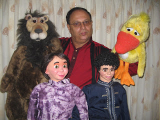

Performing Arts - Sri Lanka
6/7/2009
{kind=link}

I believe it was 2007 when we met Royston De Silva at I-Fest (Illinois). Royston's enthusiasm for learning ways to use the performing arts in his ministry to the poorest of the poor in his homeland island of Sri Lanka was inspiring. In 2007 his country was in the midst of a bitter ethnic war. Yesterday we received an eMail from Royston with the miraculous (his words) news that just two weeks ago the government over ran the terrorists, but not without great price, including the displacement of over 300,000 innocent civilians, including many, many children. It is to these thousands living in temporary shelters Royston is awaiting the governments permission to help in several ways including his "Royalroy Christian Performing Arts." He wishes to thank those who have prayed on behalf of Sri Lanka and requests your continued prayers for his work using the Gospel Through Performing Arts. present@sltnet.lk
P.S. I see the little fellow from my shop (lower right) is now blessed with some new royal clothes. Nice! You better look out for the duck behind you - it appears he's up to no good!